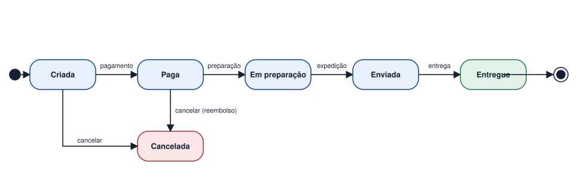
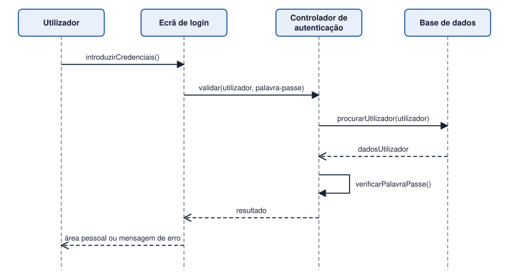

Tema 23 · UML e modelação do comportamento
Diagramas de estados e de sequência
Eventos, transições e interação entre objetos
Estes dois diagramas descrevem o comportamento, mas com perspetivas diferentes: o primeiro olha para um objeto ao longo do tempo; o segundo, para vários objetos que trocam mensagens.
Diagrama de estados
Mostra os estados por que passa um objeto durante a sua vida e os eventos que provocam as transições entre eles.
| Elemento | Descrição |
|---|---|
| Estado | Situação em que o objeto se encontra durante algum tempo (Criada, Paga, Enviada). |
| Transição | Seta que liga dois estados. |
| Evento | O que provoca a mudança, escrito sobre a seta (pagamento, expedição). Pode ter uma condição [..] e uma ação /... |
| Estado inicial e final | Círculo preenchido e círculo com anel. |
Diagrama de sequência
Mostra a ordem das mensagens trocadas entre objetos ou atores, de cima para baixo, no eixo do tempo.
| Elemento | Descrição |
|---|---|
| Linha de vida | Retângulo no topo e linha tracejada vertical, para cada participante. |
| Mensagem | Seta horizontal com o nome da operação, de quem envia para quem recebe. |
| Retorno | Seta tracejada com a resposta. |
| Autochamada | Seta que volta à mesma linha de vida. |
| Fragmentos | Blocos alt (alternativas), opt (opcional) e loop (repetição). |
No diagrama de sequência, o tempo corre de cima para baixo; a posição horizontal não indica ordem.
Atividade
Criar o diagrama de estados de uma encomenda e o diagrama de sequência de um processo de login
- Crie o diagrama de estados de uma encomenda de uma loja online: é criada, paga, preparada, enviada e entregue; pode ser cancelada antes do envio.
- Crie o diagrama de sequência de um login: o utilizador introduz as credenciais no ecrã, que as envia ao controlador; este consulta a base de dados, verifica a palavra-passe e devolve o resultado ao ecrã.
Ver proposta de resolução


No diagrama de sequência, o resultado do login poderia ser tratado com um fragmento alt: [credenciais corretas] → mostrar área pessoal; [credenciais incorretas] → mostrar mensagem de erro.
Em resumo
- O diagrama de estados descreve o ciclo de vida de um objeto: estados, eventos e transições.
- O diagrama de sequência descreve a ordem das mensagens trocadas entre objetos.
- Ambos complementam o diagrama de atividade.